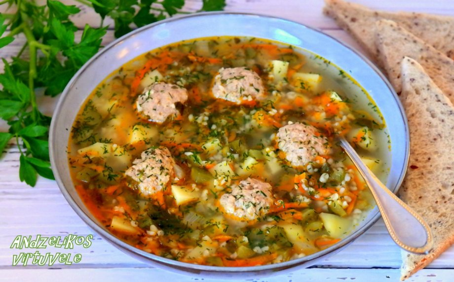

Agurkine Sriuba

DESCRIPTION
Agurku sriuba - tai lietuvoje begalo populiarus ir visur valgomas patiekalas pagamintas pagrinde is raugintu agurku.
INGREDIENTS
- Little bit of oil
- 1 small chopped onion
- 2 chopped cloves of garlic
- 1 big carrot cut in cubes
- 1/4 root of celery chopped in cubes
- 1/2 of a cup of perlines kruopos left in the water overnight
- 2 potatoes chooped in cubes
- 1.5 liters of stock or water
- 2 leaves of lauras
- as much of pickelled cucumbers as you want
- salt, black pepper
PREPARATION
- Dideliame puode įkaitinkite aliejų ir jame apkepinkite svogūnus. Kai šie suminkštės ir truputį apskrus, suberkite česnakus, po pusės minutės - morkas ir salierus. Kepinkite maišydami, kol daržovės karamelizuosis. Suberkite išmirkytas ir nusausintas perlines kruopas, toliau maišydami pakepinkite kelias minutes. Suberkite bulves, dar minutę pakepinkite. Supilkite sultinį (arba vandenį), įmeskite lauro lapus, pasūdykite, užvirinkite. Virkite uždengę ant silpnos ugnies, kol daržovės suminkštės, o kruopos bus al dente.
- Pabaigoje sudėkite pjaustytus raugintus agurkus, pavirkite apie 2-3 minutes, paragaukite. Jei trūksta, įberkite druskos, įpilkite šlakelį raugintų agurkų sunkos, pagardinkite juodaisiais pipirais. Patiekite su grietine.